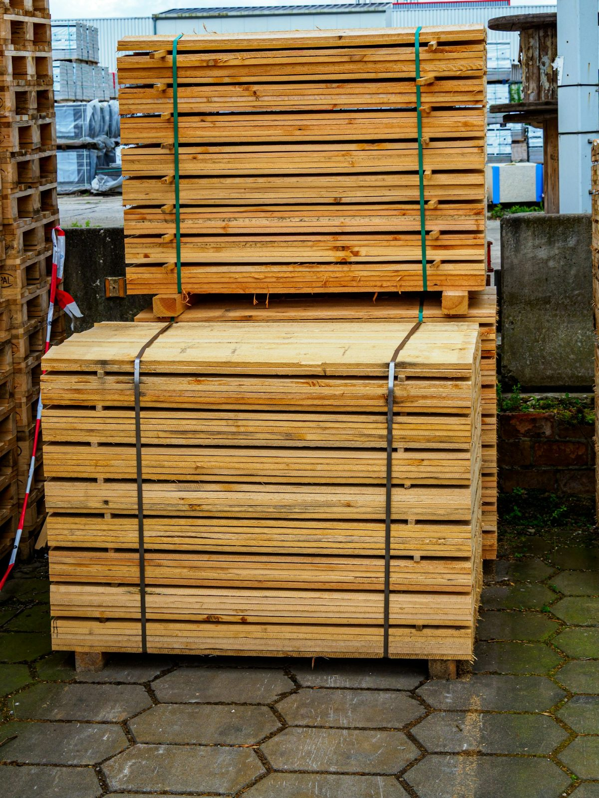

Zone A
Sallowby and within 10 miles
£25
Free over £600 of timber
One flatbed with a tail lift. Kerbside drop: we do not carry timber into buildings.
Sallowby and within 10 miles
£25
Free over £600 of timber
10 to 25 miles
£45
Free over £1,500 of timber
25 to 40 miles
£70
No free threshold
40 to 60 miles
£110
No free threshold

Free. Drive into the yard; we load with the forklift. Bring straps and a flag for anything that overhangs more than 1 m.